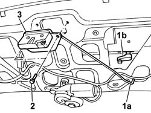
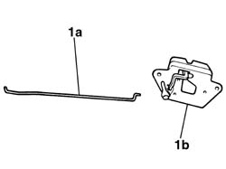

7015B10 single tailgate lock - r+r or repair with panel/protection removed
- Path
- Procedures > 70 FITTINGS > 7015 TAILGATE/ > 7015B tailgate locking/opening devices > 7015B10 single tailgate lock - r+r or repair with panel/protection removed
- Kind
- repair procedure (removal / refitting; the operation number is the code)
- Applies to
- all engines; all production periods
- Interactive page
- https://sloeber94.github.io/elrnDB-fPnd/en/#/2753125
Applies to: all engines; all production periods
 Removing
Removing
 Refitting
Refitting1. Rotate the clip and release the rod from the lock barrel to the lock (1a) from the lock (1b).
2. Undo the retaining bolts.
3. Remove the lock complete with the rod from the barrel to the lock.

Applies to: all engines; all production periods
1. Release and remove the rod from the barrel to the lock (1a) from the lock (1b).

Applies to: all engines; all production periods
Refitting
RemovingSecure the rod from the barrel to the lock to the lock.
Position the lock complete with rod from the barrel to the lock and tighten the fixing bolts.
Attach the rod from the barrel to the lock to the lock and secure it using the special clip.